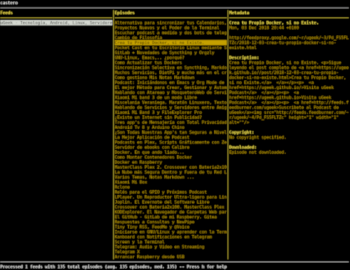

Hay muchas aplicaciones para escuchar podcast, pero ninguna tan ligera como esta. Desarrollada en python, Castero nos permite suscribirnos a nuestro podcast favoritos y tanto descargarlos como escucharlos desde la terminal.

Si no tenemos los módulos de python pip: sudo apt install python3-pip
Instalación de castero:
sudo pip3 install castero
Para poder escuchar los podcast, requiere de aplicaciones externas como vlc versión 2.2.3 o superior o mpv con libmpv
Tan simple como escribir en tu terminal
caster
Se abrirá una pantalla dividida en 3 partes:
La verdad es que es muy sencillo de utilizar. No iremos desplazando por las columnas de la pantalla con los cursores de izquierda, derecha, arriba, abajo.
Para salir, como la mayoría de las app's de ternimal q.
Para añadir el Feed deseado a…
Comandos
h - pantalla de ayuda
q - salir del cliente
a - añadir un feed
d - eliminar el feed seleccionado
r - recargar / actualizar feeds
s - guardar el episodio para la reproducción sin conexión
flechas - navegar por los menús
página arriba / abajo - menús de desplazamiento
entrar - reproducir el feed / episodio seleccionado
espacio - agregar el feed / episodio seleccionado a la cola
c - borrar la cola
n - ir al siguiente episodio en la cola
i - Invertir el orden del menú
p o k - pausa / reproducir el episodio actual
f o l - buscar hacia adelante
b o j - buscar hacia atrás
El archivo de configuración se encuentra en {HOME}/.config/castero/ después de que el cliente se haya ejecutado al menos una vez. La información de los Podcast está en {HOME}/.local/share/castero/feeds , pero este archivo no se puede editar de forma manual.
Publicado por Angel el Saturday 26 January del 2019
También te puede interesar:
Powered by org-bash-blog
Written in OrgMode with Emacs and converted to HTML with Pandoc

Este obra está bajo una licencia de Creative Commons Reconocimiento-NoComercial-CompartirIgual 4.0 Internacional.